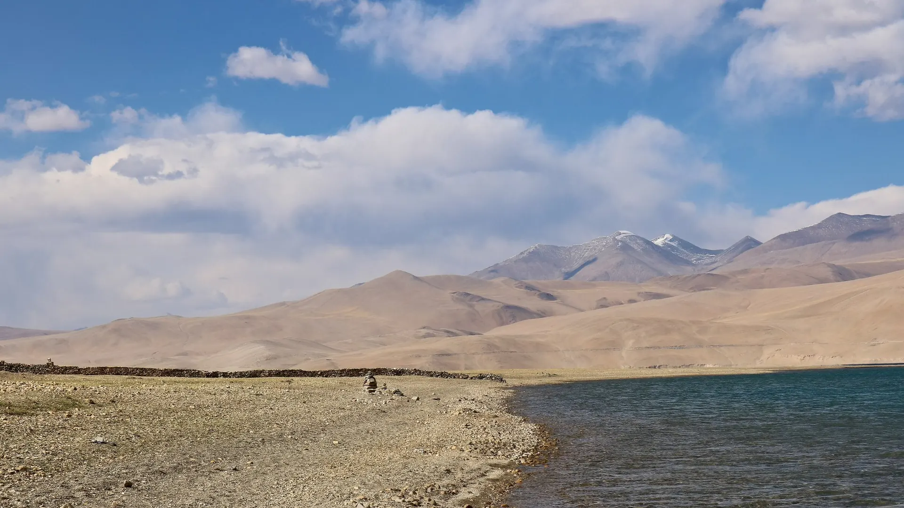

01Day 1 · Rumtse · 4,240 mkm 0.1
Off the highway
80kmFrom Leh · About 2 h by car
Rumtse is on the Leh–Manali road, about 80 km from Leh. The walk starts here, already at 4,240 m.

Photo: Ingo Mehling, CC BY-SA 3.0त्सो मोरीरी · Leh, Kashmir & Ladakh
The trek in one line, and what you can do with it.
A remote crossing of high plateau and salt lakes. There are no villages or tea houses between Rumtse and Korzok.
8 stops on the map, then the climb. Scroll the stops and the map follows.
01Day 1 · Rumtse · 4,240 mkm 0.1
80kmFrom Leh · About 2 h by car
Rumtse is on the Leh–Manali road, about 80 km from Leh. The walk starts here, already at 4,240 m.
01Day 1 · Kyamar · 4,538 mkm 10.9
10.9kmToday · +298 m, about 4 h
The first day is short and gentle, up a side valley to the camp at Kyamar.
02Day 2 · Tisaling · 4,940 mkm 24.4
2Passes · Kyamar La 5,071 m, Mandalchan La 5,206 m
Over Kyamar La, past a shepherds' shelter at Tiri Doksa, then over Mandalchan La.
03Day 3 · Ponganagu · 4,651 mkm 38.7
5,275mShibuk La · First view of Tso Kar
From Shibuk La you see Tso Kar below. The camp at Ponganagu is on its northwest shore.
04Day 4 · Nuruchan · 4,679 mkm 56.6
17.8kmToday · 5–6 h, nearly level
A long, level day down the west side of Tso Kar to Nuruchan.
05Day 5 · Gyamar Barma · 5,195 mkm 75.8
5,416mKyamayuri La · Second-highest pass
Over Horlam Kongka La, past Rajun Karu and over Kyamayuri La. On the way you may meet Changpa families with their pashmina goats and yaks.
07Day 7 · Yalung Nyau La · 5,435 mkm 88.2
5,435mHeight · Top of the trek
Day 6 is short: over Kartse La to Gyamar, under the peak of Yalung Nong. Day 7 climbs to Yalung Nyau La, the highest pass of the trek.
07Day 7 · Korzok · 4,552 mkm 97.8
26kmTso Moriri · Long, north to south
Korzok is the only village on Tso Moriri lived in all year. Its monastery is about 400 years old.
Best in Jul–Aug.
Dark: the months the trek’s sources call its best. Mid: possible. See all treks in July.
Base prices from 2 operators’ own pages, per person. GST and travel are often extra. Treqz sells nothing.
The practical things, then the questions people ask.
Only postpaid SIMs work in Ladakh. BSNL has the best coverage, then Airtel, but on the trek it comes and goes.
Bikat AdventuresThugje village, about 3 km from the Ponganagu camp, has a satellite phone. Ponganagu is the only exit point if someone must leave the trek.
Himalayan EcotourismYour Leh hotel is the last place to charge. The camps have no electricity.
Bikat AdventuresThere is no water source on the day from Ponganagu to Nuruchan. Fill up before you leave camp.
Bikat AdventuresVegetarian meals, with eggs on some days. Camps have dry-pit toilet tents; bring your own toilet paper.
Bikat AdventuresAbout 97.8 km of walking over 7 days on the trail.
The highest point is 5,435 m, about 1,250 m above the start.
Its sources grade it Hard.
Jul–Aug. It is also possible in Jun, Sep.
₹55,000 to ₹82,000 per person: base prices from 2 operators' own pages. GST and travel are often extra.
Only postpaid SIMs work in Ladakh. BSNL has the best coverage, then Airtel, but on the trek it comes and goes.
Leh's fee covers an environment fee, the Red Cross fund and a wildlife fee. Pay it online on the district permit portal; agents get 10% off.
Leh has plenty of ATMs. There are none on the trail.
Thermals, top and bottom, Full-sleeve T-shirts, Quick-dry trek pants ×2, Full-sleeve sweater, Warm jacket, Rain jacket and pants, Waterproof warm gloves, Woollen cap and sun hat. The full list is on the 3D page.
Its sources do not list December to February as a trekking season.
Its sources grade it Hard and it takes 7 days on the trail, with a highest point of 5,435 m.
Markha Valley, Chadar, Hampta Pass, Bhrigu Lake, Beas Kund.


Treks in July · Treks in August · Treks in Kashmir and Ladakh · Difficult Treks in Kashmir and Ladakh · Monsoon Treks in India · High-Altitude Treks in India (Above 4,500 m) · 7 Day Treks in India · Treks in Leh, Ladakh · Rumtse to Tso Moriri vs Markha Valley · Rumtse to Tso Moriri vs Chadar · Free trek finder · All treks in 3D